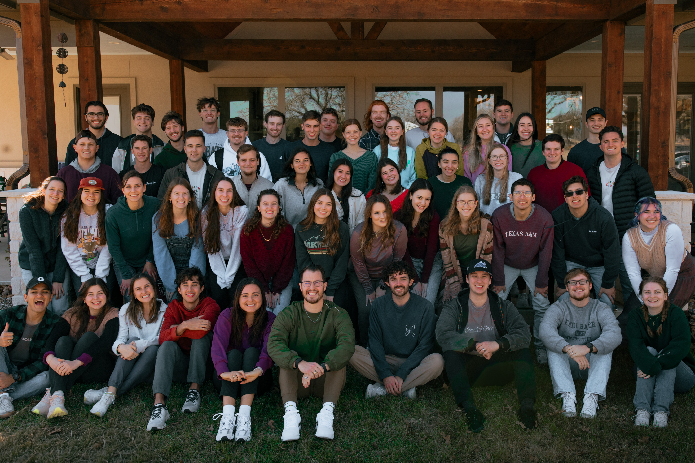

For the past two years, I’ve been responsible for coaching and caring for student leaders from our college ministry. We have amazing students at Grace Bible Church! Each of them commit significant amounts of time every week to be coached and discipled, to lead a Bible study (or as we call them, a Grace Group), and to engage in healthy community building among their peers.
Every year we have around 50 student leaders that are split into Coach Groups, one of which I was responsible for leading. This means that I got to invest heavily into the lives of eleven guys and eleven girls for the past two years, helping them learn more about God and His Word and teaching them to multiply their faith to the students around them.
I’ve learned so much from my Coach Group! Looking back, I’ve had the opportunity to intensely study and teach through four books of the Bible–1 Corinthians, Galatians, 1 Peter, and Exodus. Each book deserves detailed scrutiny, and my skills in studying God’s Word have been tried and refined. However, leading groups filled with incredibly intelligent college students takes the practice to the next level. Each would come prepared with challenging questions for the group, requiring thoughtful interpretation and consideration from all involved. So, I learned that leading a group full of students like this is more about good conversation facilitation than overt teaching.
 Spiritual Formation Content
Spiritual Formation Content
But our Coach Groups go beyond just training how to study the Scriptures. We also invest a lot of time in community-building skills with the goal of crafting “First Communities”. As these leaders go out and meet with their Grace Groups, my desire is that students all over town would find a group where they feel they’d be the First people to text when they want to pull tickets for the Aggie game, the First people to call when they’re playing pickleball and need a group, the First people to meet with to talk about their spiritual growth, the First people to run towards when they need a comforting shoulder to cry on. Our leaders know that the most important things to develop in their groups are love and trust, and that is what will open up students to take their next steps with Jesus.
These leaders are like sponges and knowledge about God and love for Him is the water. Every week, I meet with the guys to grow, learn, and coach. We check in relationally and spiritually, and then delve into formation together. Oftentimes we read the Scriptures or go through material like David Coleman’s Master Plan of Evangelism, or this Spiritual Formation Content that I adapted from Dallas Theological Seminary’s Spiritual Formation Packet. Overall, I’ve learned that my calling from Christ–the mission he’s placed on my life in whatever the medium–is to go and make disciples of all people, and so that is what I’ll continue to do!